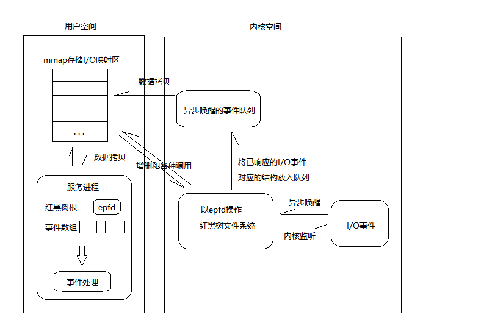

1、采用 IO 复用技术 Epoll 和线程池实现多线程的 Reactor 高并发模型
IO 复用
IO 多路复用是现代操作系统中常用的一种网络编程技术。它允许一个进程同时监听多个文件描述符，从而可以同时处理多个网络连接，而无需为每个连接使用一个单独的线程。
常用的 IO 多路复用的三种方式是 select、poll 和 epoll。它们的实现方式不同，但都可以实现 IO 多路复用的功能。它们的区别如下：
select
select 是最古老、最常见的 IO 多路复用方式之一。它使用一个文件描述符集合来监听多个文件描述符，当其中任何一个文件描述符变为可读或可写时，select 函数就会返回。
select 的一个缺点是它使用的是线性扫描算法，因此它的性能随着文件描述符数量的增加而逐渐降低。
poll
poll 是 select 的一种改进，它使用一个 pollfd 结构体数组来监听多个文件描述符。与 select 不同的是，pollfd 结构体数组是动态的，因此它可以监听更多的文件描述符。
poll 的一个缺点是它仍然使用线性扫描算法，因此它的性能也会受到文件描述符数量的限制。
epoll
epoll 是 Linux 特有的一种 IO 多路复用方式。它使用一个 epollfd 结构体来管理多个文件描述符，并使用事件通知机制来通知应用程序哪些文件描述符已准备好进行读写操作。
epoll 的优点是它使用了基于事件驱动的方式来通知应用程序，因此它的性能不会随着文件描述符数量的增加而下降。
Poll 机制相较于 Select 机制中，解决了文件描述符数量上限为 1024 的缺陷。但另外两点缺陷依然存在：
每次调用 poll，都需要把 fd 集合从用户态拷贝到内核态，fd 越多开销则越大； 每次调用 poll，都需要在内核遍历传递进来的所有 fd，这个开销在 fd 很多时也很大
epoll 是 Linux 下的一种 I/O 事件通知机制，可以用于高效地处理大量的 socket 连接。它提供了三个主要的函数：
epoll_create()：创建一个 epoll 实例，返回一个文件描述符。该函数的参数 size 指定 epoll 实例中最大的文件描述符数目，一般设置为需要监听的 socket 数。epoll_ctl()：向 epoll 实例中添加或删除一个文件描述符，或者修改一个文件描述符的监听事件。该函数的参数 epfd 是 epoll 实例的文件描述符，op 指定操作类型，fd 是需要添加/删除/修改的文件描述符，event 指定要监听的事件类型。epoll_wait()：等待文件描述符上的事件发生，当有事件发生时，该函数将返回一个结构体数组，每个结构体描述一个事件。该函数的参数 epfd 是 epoll 实例的文件描述符，events 是一个存放事件的数组，maxevents 指定最多返回的事件数目，timeout 指定等待的超时时间。如果 timeout 为-1，表示一直等待，直到有事件发生；如果 timeout 为 0，表示立即返回，不等待。
单 reactor 多线程高并发模型有什么缺陷，在什么场景下会触发，解决办法是什么？
单 reactor 多线程高并发模型的缺陷在于：
- 竞争条件：多个线程同时访问共享资源，容易出现竞争条件，导致数据不一致或者程序崩溃。
- 上下文切换：线程切换需要消耗时间，当线程数过多时，会导致过多的上下文切换，降低程序的性能。
- 瓶颈：单 reactor 模型只有一个事件循环，无法充分利用多核 CPU 的优势，无法处理更多的并发连接。
当并发连接数量增加时，单 reactor 多线程模型容易出现线程切换开销大、竞争条件等问题，导致性能下降，甚至出现程序崩溃等情况。
Ractor 模型和 Proactor 模型
Reactor 模型：
- 在 Reactor 模型中，应用程序将某个对象（通常是一个 socket）和其对应的事件处理函数注册到事件多路分发器上。然后，事件多路分发器会阻塞等待操作系统的事件通知。当某个对象上发生了注册的事件（例如，数据已经准备好可以读取），事件多路分发器就会调用相应的处理函数进行处理。
因此，在 Reactor 模型中，所有 I/O 操作都由应用程序显示地触发。实际的 I/O 操作（例如读和写）是同步的，尽管事件分发是异步的。
Proactor 模型：
- Proactor 模型与 Reactor 模型的主要区别在于，I/O 操作的启动和完成都是异步的。当应用程序想要执行一个 I/O 操作时，它只需要发起该操作即可，然后就可以立即返回继续执行其他任务。当操作系统完成该操作时，它会自动调用预先注册的回调函数。
因此，在 Proactor 模型中，应用程序无需关心具体的 I/O 操作，而只需要发起这些操作并处理它们的结果。
对比：
-
操作复杂性：Reactor 模型中，应用程序需要负责管理 I/O 操作的具体过程，这使得编程较为复杂。相反，在 Proactor 模型中，操作系统会自动完成 I/O 操作，并在操作结束时通知应用程序，这使得编程更为简单。
-
I/O 操作的阻塞性：在 Reactor 模型中，I/O 操作本身是阻塞的，只有事件分发是异步的。这可能导致一些性能问题，特别是在处理大量并发请求时。相反，在 Proactor 模型中，所有的 I/O 操作都是非阻塞的，这使得它能够更好地支持大规模并发。
应用场景：Reactor 模型更适合于需要立即响应事件但不需要执行大量 I/O 操作的情况，如 GUI 程序。而 Proactor 模型则更适合于需要处理大量并发 I/O 操作的情况，如网络服务器。
总的来说，Proactor 模型解决了 Reactor 模型中的一些问题，提供了一种更简洁、更高效的异步 I/O 实现方式。然而，选择哪种模型取决于具体的应用场景和需求。
epoll 触发模式
-
边缘触发 (Edge-triggered, ET) 与水平触发 (Level-triggered, LT) 的区别
在 epoll 中，有两种事件触发模式：边缘触发和水平触发。
- 边缘触发（ET）: 当被监控的 Socket 描述符上有可读事件发生时，服务器端只会从 epoll_wait 中苏醒一次。即使进程没有调用 read 函数从内核读取数据，也依然只苏醒一次。因此，我们的程序必须保证一次性读取完内核缓冲区的所有数据。
- 水平触发（LT）: 当被监控的 Socket 上有可读事件发生时，服务器端会不断地从 epoll_wait 中苏醒，直到内核缓冲区的数据被 read 函数完全读取。目的是告知我们有数据需要读取。
举例来说：
- 边缘触发类似于你的快递到达一个快递箱，这个快递箱只会通过短信通知你一次。即使你没有取走快递，它也不会再发送第二条短信提醒你。
- 水平触发就像快递箱发现你的快递还未取走，于是会不停地发短信提醒你，直到你取走了快递。
总结下来：
水平触发是只要满足事件条件（例如内核中有数据需要读），就一直反复通知用户。而边缘触发则是当第一次满足条件的时候才触发，之后不会再传递同样的事件。
这种差异影响到两种模式的使用方式：
- 在水平触发模式下，内核通知文件描述符可读写后，我们可以继续检查其状态，看它是否仍可读或可写。所以接到通知后，没有必要一次尽可能多地进行读写操作。
- 在边缘触发模式下，I/O 事件只会通知一次，而且我们无法知道能读写多少数据。所以收到通知后，应尽可能多地进行读写操作，避免错过读写机会。由于我们会循环读写文件描述符，如果文件描述符是阻塞的且没有数据可读写，进程会阻塞在那里，无法继续执行。因此，边缘触发模式常与非阻塞 I/O 配合使用，程序会持续执行 I/O 操作，直到系统调用（如 read 和 write）返回错误，错误类型为 EAGAIN 或 EWOULDBLOCK。
通常，边缘触发模式的效率高于水平触发模式，因为边缘触发模式可以减少 epoll_wait 的系统调用次数，降低系统调用的开销（涉及上下文切换）。
epoll 底层是如何实现的
一颗红黑树，一张准备就绪句柄链表，少量的内核 cache，就帮我们解决了大并发下的 socket 处理问题。
执行 epoll_create()时，创建了红黑树和就绪链表；
执行 epoll_ctl()时，如果增加 socket 句柄，则检查在红黑树中是否存在，存在立即返回，不存在则添加到树干上，然后向内核注册回调函数，用于当中断事件来临时向准备就绪链表中插入数据；
执行 epoll_wait()时立刻返回准备就绪链表里的数据即可。  红黑树维护事件表，事件驱动机制下的回调函数加入就绪链表，拷贝只拷贝就绪链表
当某一进程调用 epoll_create 方法时，Linux 内核会创建一个 eventpoll 结构体，这个结构体中有两个成员与 epoll 的使用方式密切相关，如下所示：
truct eventpoll {
...
/*红黑树的根节点，这棵树中存储着所有添加到epoll中的事件，
也就是这个epoll监控的事件*/
struct rb_root rbr;
/*双向链表rdllist保存着将要通过epoll_wait返回给用户的、满足条件的事件*/
struct list_head rdllist;
...
};
我们在调用 epoll_create 时，内核除了帮我们在 epoll 文件系统里建了个 file 结点，在内核 cache 里建了个红黑树用于存储以后 epoll_ctl 传来的 socket 外，还会再建立一个 rdllist 双向链表，用于存储准备就绪的事件，当 epoll_wait 调用时，仅仅观察这个 rdllist 双向链表里有没有数据即可。有数据就返回，没有数据就 sleep，等到 timeout 时间到后即使链表没数据也返回。所以，epoll_wait 非常高效。
所有添加到 epoll 中的事件都会与设备(如网卡)驱动程序建立回调关系，也就是说相应事件的发生时会调用这里的回调方法。这个回调方法在内核中叫做 ep_poll_callback，它会把这样的事件放到上面的 rdllist 双向链表中。
在 epoll 中对于每一个事件都会建立一个 epitem 结构体，如下所示：
struct epitem {
...
//红黑树节点
struct rb_node rbn;
//双向链表节点
struct list_head rdllink;
//事件句柄等信息
struct epoll_filefd ffd;
//指向其所属的eventepoll对象
struct eventpoll *ep;
//期待的事件类型
struct epoll_event event;
...
}; // 这里包含每一个事件对应着的信息。
2、利用状态机和正则解析 HTTP 报文请求，实现静态资源的处理
状态机一共有四个状态：REQUEST_LINE， HEADERS， BODY， FINISH，分别对应了 http 请求的三个内容，FINISH 是结束，程序通过 while 循环，将状态从 REQUEST_LINE→Headers→Body→Finish 转换。
http 请求和响应的格式
请求格式：
<Method> <Request-URI> <HTTP-Version>
<Headers>
<Body>
响应格式
<HTTP-Version> <Status-Code> <Reason-Phrase>
<Headers>
<Body>
3、利用标准库容器封装 char，实现自动增长的缓冲区
缓冲区功能如果是固定的缓冲区，在存储小数据时会照成极大资源的浪费。自动增长的缓存区会根据每个客户端的请求响应数据大小，自适应的调整缓冲区大小。
缓冲区场景
- 从内核缓冲区中分散读取数据至缓冲区（in）
- HTTP 数据解析的时候，将缓冲区的数据读出（out）
- HTTP 生成响应数据的时候，会写入缓冲区（in）
- 将缓冲区中的数据写入内核缓冲区（out）
如何扩容：
从内核缓冲区读数据采用的是分散读（readv），会定义一个长度为 2 的结构体 iovec 数组（0 存放缓冲区可写部分，1 存放一个临时 char 数组）。在读的时候会首先将 WritableBytes 空间占满，当还有数据需要写入的时候就需要扩容。扩容分为两种情况，因为在 HTTP 类解析缓冲区数据的时候，readPos_会不断增加，那么 PrependableBytes 就会不断增加，这块区域是空闲的，如果说 WritableBytes 和 PrependableBytes 的空间大小满组的话，那就只需要移动数据。那如果不满足的话，就要 resize 缓冲区的大小。
分散写：
写的内容也是被放在一个 2 个大小 iovec 数组（0 存放响应头，1 存放 html 文件）
-
代码详解
class Buffer { public: Buffer(int initBuffSize = 1024); ~Buffer() = default; // 有多少字节的数据可以写 size_t WritableBytes() const; // 有多少字节的数据可以读 size_t ReadableBytes() const; // buffer头部有多少字节的数据空出来 size_t PrependableBytes() const; // 返回第一个可读字节的char地址 const char *Peek() const; // 确保WritableBytes小于len，如果不是，就调用MakeSpace_动态扩容 void EnsureWriteable(size_t len); // 写入结束，更新writePos_ void HasWritten(size_t len); // 写出，根据长度调整readPos_ void Retrieve(size_t len); // 写出，根据指针计算写出的长度，并调用Retrieve void RetrieveUntil(const char *end); // 重置缓冲区，在写入内核区缓存后来调用 void RetrieveAll(); std::string RetrieveAllToStr(); // 定位buffer内数据段末尾，在了http解析函数中使用 const char *BeginWriteConst() const; // 定位buffer内数据段首部 char *BeginWrite(); // 动态扩容 void Append(const std::string &str); // 核心是这个，其他重载函数内部调用了这个 void Append(const char *str, size_t len); void Append(const void *data, size_t len); void Append(const Buffer &buff); // 采用分散读，分散读的好处是减少系统调用次数，提高IO效率 ssize_t ReadFd(int fd, int *Errno); // 这个函数没有用，WriteFd写在了HttpConn::write中 ssize_t WriteFd(int fd, int *Errno); private: // 返回buffer头部指针 char *BeginPtr_(); const char *BeginPtr_() const; // 若PrependableBytes和WritableBytes大于len，整体数据往前移，若小于，那就要resize void MakeSpace_(size_t len); // 用动态数组封装的char缓冲区 std::vector<char> buffer_; // 如果没有实现log的话，就不需要原子，因为每个线程独自占有各自的buffer std::atomic<std::size_t> readPos_; std::atomic<std::size_t> writePos_; };Buffer 类中的成员变量包括一个动态数组封装的 char 缓冲区 buffer*，以及两个 std::atomicstd::size_t类型的变量 readPos*和 writePos_，分别表示当前缓冲区的读取位置和写入位置。 类中提供的主要接口包括：
- WritableBytes()、ReadableBytes()、PrependableBytes()：分别用于获取缓冲区中可以写入的字节数、可以读取的字节数和缓冲区头部留出来的字节数。
- Peek()：返回缓冲区中第一个可读字节的 char 地址。
- EnsureWriteable()：确保缓冲区中可以写入的字节数大于等于 len，如果不够则进行动态扩容。
- HasWritten()：写入结束后更新 writePos_。
- Retrieve()、RetrieveUntil()：用于将已读取的数据从缓冲区中移除。
- RetrieveAll()、RetrieveAllToStr()：用于将缓冲区中所有数据移除并返回。
- BeginWriteConst()、BeginWrite()：返回缓冲区中可写数据的起始地址。
- Append()：用于向缓冲区中增加额外的数据。
- ReadFd()：用于采用分散读方式从文件描述符 fd 中读取数据并写入缓冲区。 除此之外，类中还有一些私有函数，用于实现动态扩容、返回 buffer 头部指针等功能。
非阻塞模式下 read 返回值 < 0 表示没有数据，= 0 表示连接断开，> 0 表示接收到数据。
4、基于小根堆实现定时器，关闭超时的非活动链接
功能:为每一个客户端设置一个定时器，用户关闭超时的非活动链接。
实现:定义了一个定时器结构体，包括 id（服务端为每个客户端分配的文件描述符），过期时间，回调函数以及重载了一个比较操作符。实现了一个 HeapTimer 类，用于存储管理定时器。此外还设计了 Tick 和 GetNextTick 函数。
Trik 函数用于更新计时器堆的状态，通过 while 循环来不断 pop 出超时的定时器节点。
GetNextTrick 用于返回堆顶元素的到期时间戳与当前时间戳的差，如果堆为空，则返回-1。同时，结合这个返回到期时间戳的函数，可以减少epoll_wait系统调用次数，来提高效率。epoll_wait 有一个参数叫 timeout，设置为 0，会直接返回，如果是-1 就一直阻塞，如果大于 0，表示要最多等到 timeout 时间才返回。那么我们假设 timeout 这段时间内没有新的事件发生，就没有必要一直轮询。
5、利用 RAII 机制实现数据库连接池，减少数据库建立和关闭的消耗
epoll 的零拷贝技术
在使用 epoll 进行网络编程时，零拷贝技术可以提高数据传输的效率，减少 CPU 的使用率和数据复制的开销。
具体来说，epoll 的零拷贝技术可以通过以下两种方式实现：
- sendfile 系统调用
sendfile 系统调用可以将文件数据直接从内核缓冲区发送到网络中，而无需将数据从内核缓冲区复制到用户空间缓冲区。在使用 epoll 进行网络编程时，可以通过 sendfile 系统调用将文件数据直接发送到网络中，从而避免了数据复制的开销。这种方式称为 epoll 的“零拷贝”技术。
- mmap 系统调用
mmap 系统调用可以将文件映射到进程的地址空间中，从而使得应用程序可以直接访问文件数据，而无需进行读写操作。在使用 epoll 进行网络编程时，可以通过 mmap 系统调用将文件映射到进程的地址空间中，然后使用 send 系统调用将数据直接从内核缓冲区发送到网络中，从而避免了数据复制的开销。
总的来说，epoll 的零拷贝技术可以将数据传输的效率提高到极致，减少 CPU 的使用率和数据复制的开销。这在高并发的网络编程中非常有用，可以显著提高系统的性能和稳定性。
为什么要用线程池
使用线程池的主要原因有:
-
避免频繁创建和销毁线程。在使用超时或存在较长的 Waiting 时间的应用中,如果每次都需要创建一个新的线程将造成较大的开销。线程池可以重用过期的空闲线程,从而避免线程创建的开销。
-
提高线程的可用性。在线程池中,可以有效地管理所有重复使用的线程,从而可以更好地利用这些可用的工作线程。
-
控制并发数量。通过调整线程池中包含的线程数量,可以控制同一时间内允许运行的最大线程数目。这对于避免过载控制非常有用。
-
提高资源利用率。 multiplex 可以重用同一个线程来处理多个任务,使资源得以更好地利用,比如共享内存的分配和设备等。
-
管理任务的进度。线程池允许通过设置最大线程数来限制任务的并行进行数,以使任务进展得以控制和管理。
-
避免死锁和饥饿，线程池可以通过控制线程的调度和资源分配来避免这些问题的发生。
需要使用线程池的主要场景有:
CPU 密集型任务。运行于循环或占用较长时钟周期的任务最适合使用线程池。
I/O 密集型任务。涉及大量 I/O 等待的任务,比如数据库查询,网络请求等也非常合适。
服务端应用。提供服务的应用,需要处理大量客户端请求,使用线程池可以管理多个请求使用同一个线程。
GUI 应用。从事件驱动线程处理 GUI 事件的应用也应该使用线程池,以避免频繁创建和销毁 UI 线程。
总结来说,在以下情况下,使用线程池会更为合适:
任务较少,执行时间较长的任务。
存在较长时间的 I/O 等待的任务。
需要控制并发数的场景。如避免过载。
需要重用空闲的工作线程的情况。如处理密集的但较短期的请求等。
线程池的核心参数
创建一个线程池需要考虑的关键信息有:
核心线程数(corePoolSize):线程池中始终存在的基本大小的工作线程数目。这个值通常很小,默认值是 1。
最大线程数(maximumPoolSize):线程池能容纳的最大线程数。即使处理请求需要更多的工作线程,这个值也不会超过这个上限值。
允许线程阻塞的时间(keepAliveTime):当空闲的工作线程数超过核心大小时,允许适当的扩充。当没有新的任务到达指定的时间后,线程池会进行判断,如果当前空闲的工作线程数超过核心大小,且空闲时间超过 keepAliveTime,那么多余的线程会被销毁。单位是毫秒。默认值是 60 秒。
阻塞队列(BlockingQueue):用来存储任务的阻塞队列。通常选择 LinkedBlockingQueue 或者 ArrayBlockingQueue。他们同时还支持超时特性,可以指定阻塞队列不满时的超时时间。
续约策略(补充策略):用于在任务捶捶式增长时决定是否增加或减少工作线程数的策略。常用策略有:
FIFO FIFO 队列策略,按照任务添加到阻塞队列的顺序依次处理。公平性最强。 LIFO 后入先出队列策略。 PriorityQueue 优先级队列,根据任务优先级依次处理。 LinkedBlockingQueue 链式阻塞队列,默认使用 FIFO 策略。 ArrayBlockingQueue 数组阻塞队列,同样使用 FIFO 策略。
边缘出发和水平触发
水平触发(level-trggered)
- 只要文件描述符关联的读内核缓冲区非空，有数据可以读取，就一直发出可读信号进行通知，
- 当文件描述符关联的内核写缓冲区不满，有空间可以写入，就一直发出可写信号进行通知
边缘触发(edge-triggered)
- 当文件描述符关联的读内核缓冲区由空转化为非空的时候，则发出可读信号进行通知，
- 当文件描述符关联的内核写缓冲区由满转化为不满的时候，则发出可写信号进行通知
两者的区别？ 水平触发是只要读缓冲区有数据，就会一直触发可读信号，而边缘触发仅仅在空变为非空的时候通知一次，举个例子：
读缓冲区刚开始是空的 读缓冲区写入2KB数据 水平触发和边缘触发模式此时都会发出可读信号 收到信号通知后，读取了1kb的数据，读缓冲区还剩余1KB数据 水平触发会再次进行通知，而边缘触发不会再进行通知
所以边缘触发需要一次性的把缓冲区的数据读完为止，也就是一直读，直到读到EGAIN(EGAIN说明缓冲区已经空了)为止，因为这一点，边缘触发需要设置文件句柄为非阻塞。
ET模式在很大程度上减少了epoll事件被重复触发的次数，因此效率要比LT模式高。epoll工作在ET模式的时候，必须使用非阻塞套接口，以避免由于一个文件句柄的阻塞读/阻塞写操作把处理多个文件描述符的任务饿死。
在Linux中，epoll是一种I/O多路复用技术，可以高效地处理大量并发连接。epoll有两种工作模式：LT（Level Trigger，水平触发）和ET（Edge Trigger，边缘触发）。下面我们分别来看一下这两种模式的区别和适用场景。
LT模式 在LT模式下，只要输入/输出条件满足，epoll就会通知应用程序。例如，只要数据是可读的（即使已经读过），epoll就会通知应用程序。
这种模式的好处是比较容易理解和编程，因为即使你忽略了一次可读、可写的通知，只要满足条件，epoll还会继续通知你。这对于编写简单的单线程程序来说非常有用。
ET模式 与LT模式不同，ET模式下，epoll只在输入/输出状态发生变化时通知应用程序。例如，当文件描述符从不可读状态变为可读状态时，epoll会通知应用程序。但是，如果你忽略了这个通知，那么即使后续数据仍然可读，epoll也不会再次通知你。因此，在ET模式下，你需要一直读/写数据，直到数据完全读完或写完。
ET模式的好处是，因为通知次数少，所以性能更高。但是，编程也更复杂，因为你需要处理完所有的数据，否则可能会错过后续的通知。
因此，ET模式适用于高性能、大并发的场景，比如高性能的网络服务器。而LT模式则适用于简单的单线程程序，或者对性能要求不是特别高的场景。
需要注意的是，不论是LT模式还是ET模式，你都需要非阻塞的文件描述符，否则你可能会在等待数据时阻塞，这样就失去了使用epoll的意义。
什么是非阻塞的文件描述符
非阻塞文件描述符是一种与 I/O 操作相关的概念，它与阻塞文件描述符相对应。以下是它们的主要区别：
- 阻塞文件描述符（Blocking File Descriptor）：
- 默认情况下，大多数文件描述符都是阻塞的，包括标准输入、标准输出、套接字等。
- 当使用阻塞文件描述符进行读取（例如
read函数）或写入（例如write函数）操作时，如果没有数据可读或没有足够的空间来写入数据，程序将被阻塞，直到满足操作的条件为止。 - 阻塞文件描述符通常会导致程序在进行 I/O 操作时暂停执行，直到数据可用或操作完成。
- 非阻塞文件描述符（Non-blocking File Descriptor）：
- 非阻塞文件描述符是通过设置文件描述符的标志位（通常使用
fcntl函数或O_NONBLOCK标志）来实现的。 - 当使用非阻塞文件描述符进行读取或写入操作时，如果没有数据可读或没有足够的空间来写入数据，操作不会阻塞程序，而是立即返回一个错误或特定的返回码（通常是
-1），同时设置全局变量errno来指示错误的原因。 - 使用非阻塞文件描述符可以使程序避免在 I/O 操作上无限期地阻塞，从而允许程序在等待数据变得可用时执行其他任务或采取其他措施。
- 非阻塞文件描述符是通过设置文件描述符的标志位（通常使用
非阻塞文件描述符通常用于异步编程、事件驱动编程和多路复用机制（如 select、poll、epoll）中，以实现同时处理多个文件描述符的 I/O 操作，而不会阻塞整个程序的执行。这种方式可以提高程序的响应性和性能，特别适用于需要同时处理多个并发连接的服务器应用程序。
epoll wait的time_out参数
- 当
timeout参数设置为0时：- 如果
timeout设置为0，epoll_wait函数将立即返回，不会等待任何事件的发生。 - 这意味着它会立即查询文件描述符状态，然后返回已经准备好的文件描述符数目（可能为0），而不会等待事件的发生。这通常用于非阻塞的轮询操作。
- 如果
- 当
timeout参数设置为-1时：- 如果
timeout设置为-1，epoll_wait函数将一直等待，直到有一个或多个文件描述符上的事件发生，或者出现错误才返回。 - 这种情况下，
epoll_wait不会超时，会一直阻塞等待事件的发生。这通常用于实现一种阻塞的事件循环，使程序能够实时响应事件。
- 如果
通常情况下，你可以根据应用程序的需求选择合适的超时时间。如果你希望立即返回而不阻塞，可以将超时设置为 0。如果你希望一直等待事件的发生，可以将超时设置为 -1。如果你希望在一定的时间间隔后返回，可以将超时设置为一个正整数，表示等待的毫秒数。根据具体的情况，你可以在事件循环中使用不同的超时参数来实现不同的逻辑。
...